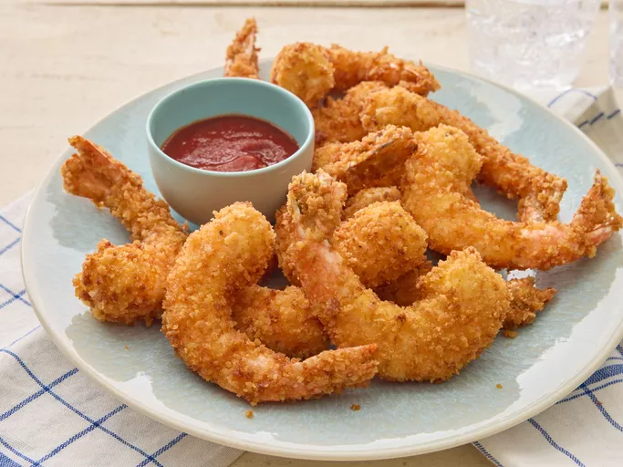

Fried Shrimp Recipe

How to Make Fried Shrimp
Restaurant-worthy fried shrimp is 15 minutes (and a few simple ingredients) away. Take it from us: This irresistibly crunchy fried shrimp recipe is impossible to beat.
Fried Shrimp Ingredients
- Flour: your shrimp in all-purpose flour before frying promotes a wonderfully crunchy crust.
- Eggs: Dipping the floured shrimp in eggs gives the bread crumbs something to adhere to.
- Bread Crumbs: Panko bread crumbs add the perfect amount of flavor and crunch.
- Shrimp: You'll need one pound of peeled, deveined jumbo shrimp.
- Oil: Vegetable oil is great for frying, as it has a neutral flavor and can stand up to high heat.
How to Fry Shrimp
- Set up your workspace: Mix the flour and seasonings in one bowl. Beat the eggs until frothy in a second bowl. Place the bread crumbs in a third bowl.
- Dredge, dip, and coat: Dredge the shrimp in the flour mixture, then dip it into the eggs. Finally, press the shrimp in the crumbs. Turn to coat.
- Fry the shrimp: oil in a heavy pot to 350 degrees F. Deep fry the shrimp in batches until cooked through. Transfer to paper towels to drain.